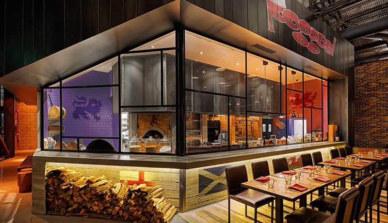

Front End Developer/Designer
Pogged
Traditional British Food

Pogged was founded in 2017 by Simon T. Clyde. After living in the U.S. for many years he was missing the comfort foods of home. Being part of the active British community here in San Diego, his friends encouraged him to set up his restaurant.
Pogged is a northern England term meaning “stuffed” or “full of food”
Design Elements
Colour Scheme
The Union Jack is the national flag for the United Kingdom and it made up of the flags from England and Scotland. Wales joined the union later and is not represented in the flag. The flag is made up of vibrant red, white and blue colours.
#0F1233
(15, 18, 51)
#901A1D
(144, 26, 29)
#25140E
(37, 20, 14)
Darker, more regal tone colours of the Union Jack were selected for this web site. Brown was choosen as a secondary palette colour. This is used for general text labels and buttons.
Font Styles
Pogged aims to capture the British dining experience, extraordinary in its simplicity, impeccable in execution. It invites families and friends to enjoy the British ambiance, whilst they take care of the rest.
To capture the restaurant’s branding and message, I chose “Monotype Corsiva” (a free-flowing serif font) for headers and “Crimson Text” (a simplistic san-serif font) for the body copy.
Step into Design...
The design process is very iterative… things that sounds like a good idea, are not always so! The initial step of any design is starting with the basic ideas/thoughts from the customer. The Pogged project included the design of the menu as well as the design for the web site. Once the menu was complete, it became the input for the web site design
The design process is very iterative… things that sounds like a good idea, are not always so! The initial step of any design is starting with the basic ideas/thoughts from the customer. The Pogged project included the design of the menu as well as the design for the web site. Once the menu was complete, it became the input for the web site design
Mockups were created for the following media sizes: mobile, tablet and desktop.
Adobe Experience Design was used for the mockups as it creates a fully interactive prototype. When giving a customer demo, an interactive demo is much more impactful.
Deliverables for this project:
- Logo
- Business Card
- Printed Menu
- Web Site (design only)